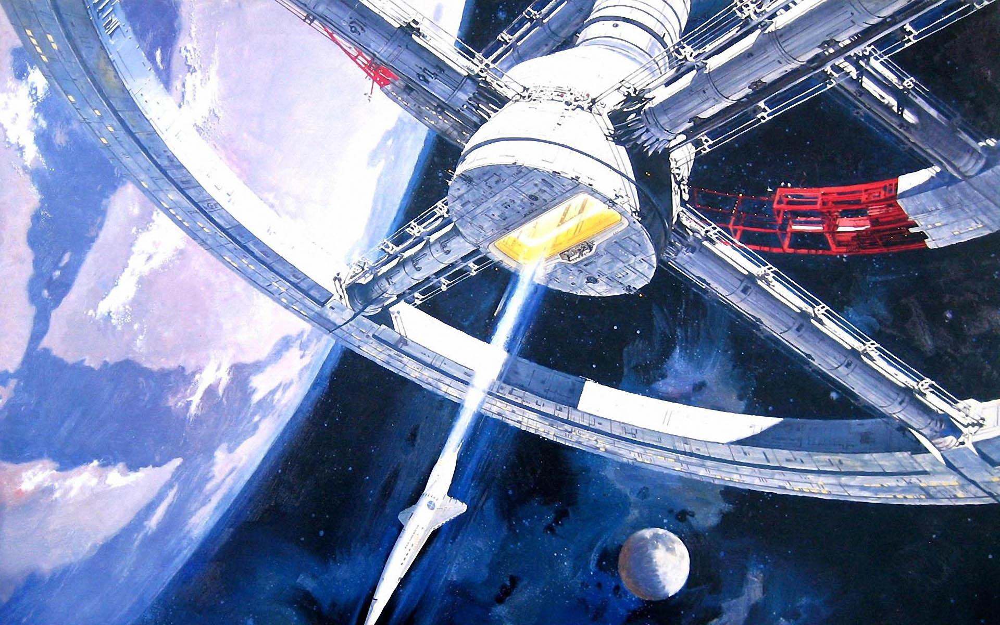

Technology
Space: The Final Frontier
By Some Guy
26/02/2021
We have become a planetary species. Evolving from tool-using hominids on the African savanna to the dominant species on the planet, technology has been key to our evolution. The use of technology to drive non-biological solutions to social and environmental challenges has affected the scope and direction of our evolution. In fact, it is now driving our expansion beyond the Earth itself.
Much as the Industrial Revolution ignited the rise of the United States and other advanced economies, so a new generation of disruptive technologies is now shaping an engineering revolution. The combination of artificial intelligence (AI), automation, and new space-based industries suggests that we have entered a new era— one that more closely mirrors science fiction than the factory-driven, industrial society of the past century.
In this software-driven era, humanity’s promethean urge for technological advancement is now propelling our species towards an interplanetary existence. Indeed, it is almost a forgone conclusion that by the end of this century, we Homo sapiens will have expanded beyond the Earth— terraforming Mars for human habitation. This instinct for expansion is also driving a planetary consciousness and planetary identity.
The scale of this cultural transformation is mediated by technological advancement and global integration, but it is rooted in an evolving capacity to see the Earth as a whole system. This psychological reframing mirrors the radically enlarged perspective described by astronauts when viewing the earth from space. Indeed, the term for this cognitive shift is the “overview effect” and it constitutes the basis of an emerging planetary worldview.
In the United States, NASA has already begun planning a new habitation platform around the Moon. Moving beyond the International Space Station (ISS), NASA is working to commercialize spaceflight in low Earth orbit (LEO) with the broader purpose of going into deep space. This shift in the nature of space exploration: from a government-directed presence in LEO to a public-private ecosystem is igniting a fully-fledged space economy. According to Merrill Lynch, this space economy will be worth a staggering $3 trillion by 2050.
Together, commercial pioneers like Blue Origin, Virgin Galactic, Orion Span, SpaceX, SNC, OneWeb and Boeing are pouring enormous resources into frontier industries crisscrossing satellite infrastructure, communications, solar energy, reusable rockets, asteroid mining, and space tourism. Indeed, Elon Musk’s SpaceX has already begun deploying over 12,000 LEO satellites to provide low-latency broadband internet infrastructure on a planetary scale.
While satellite broadband is expected to drive the lion’s share of wealth creation, near-Earth asteroid mining is forecast to eventually become a multi-trillion dollar industry. Venture interest is growing in mining asteroids for scarce commercial resources including cobalt, iron, and nickel, as well as precious metals—gold, silver, and platinum— and even water. Meanwhile, space tourism is expected to generate a sizable $850 billion by 2030.
Of course, the United States is not the only country with plans on space. Russia, the European Union, India, Japan, and China are all investing in advanced space programs. This includes planned missions to the moon and Mars, and designs on deep space exploration. In fact, China’s ambitions include a permanent Chinese space station by 2022, and crewed expeditions to the Moon by 2024.
As new mission-driven organizations compete to develop a commercial presence in space, the proliferation of space-based industries will mean a substantially larger global innovation ecosystem. Access to abundant resources and the engineering of space-based technologies could drive frontier industries both on Earth and off-planet.